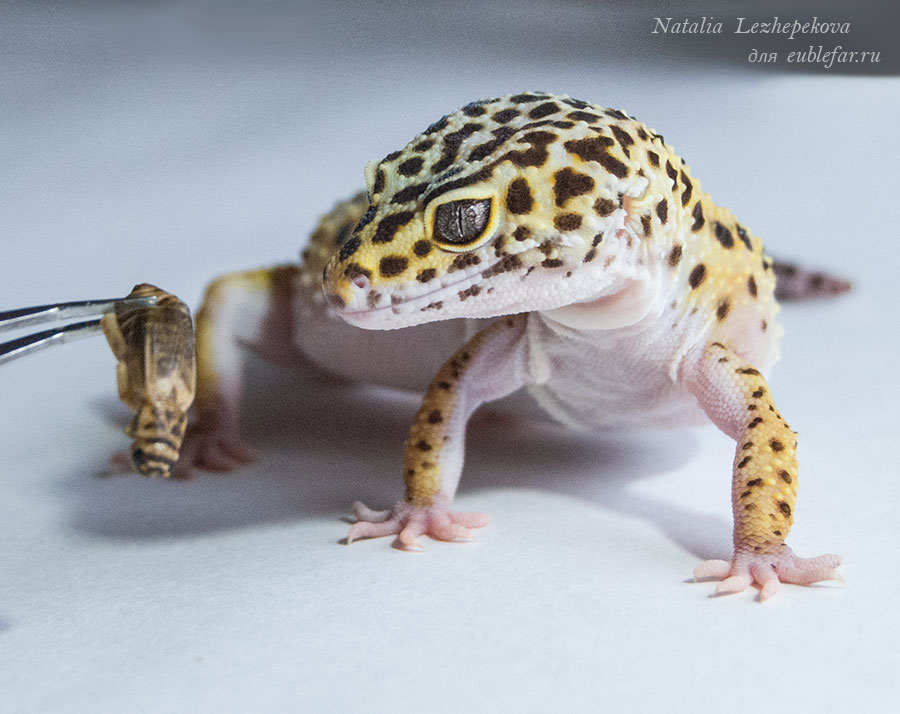
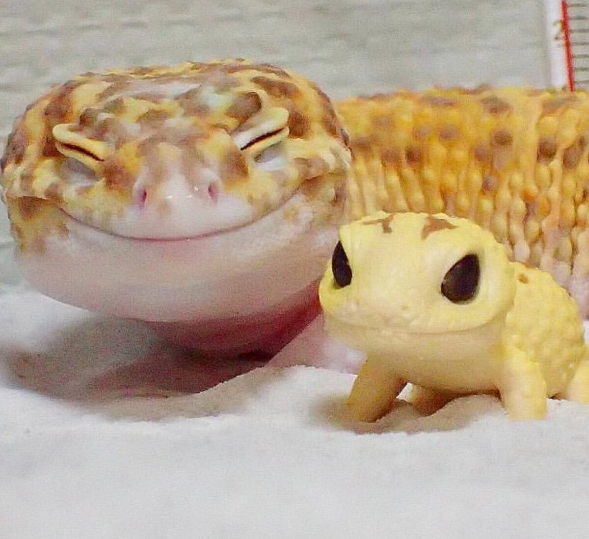
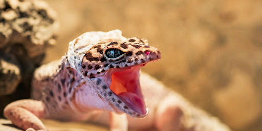

-
Эублефары не вызывают аллергию
Эублефары не вызывают аллергию. Так как на коже у них нет шерсти, а линька происходит практически «чулком», то никаких аллергенов на самих эублефарах быть не может. Поэтому люди страдающие аллергией могут смело заводить эублефара в качестве домашнего питомца.
-
Эублефары не ночные животные, а сумеречные
Эублефары не ночные животные, а сумеречные. Они наиболее активны рано утром на расходе солнца и вечером. Когда хозяева собираются на работу, и когда возвращаются домой эублефары готовы к общению. Ночью и днем эублефары предпочитают отдыхать. Впрочем, они легко могут подстраиваться под ритм человека и будут наиболее активны тогда, когда их кормят и общаются с ними.
-
Эублефары не требовательны к еде
Эублефары не требовательны к еде. Взрослые особи питаются лишь 1-2 раз в неделю, однако, малыши едят чаще. В природе во время зимовки они могут не есть месяцами.